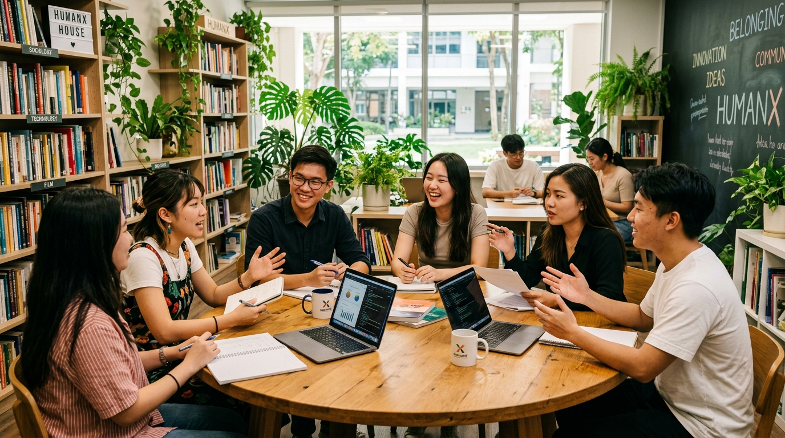

"บ้านที่บ่มเพาะคนรุ่นใหม่ให้พร้อมสำหรับโลกที่เปลี่ยนเร็ว เรียนรู้ผ่านโจทย์จริงของประเทศไทย และส่งต่อคุณค่ากลับสู่สังคม"
มีเป้าหมายพัฒนาคนไทยให้มีทักษะแห่งอนาคตและทักษะด้านสังคมและอารมณ์ (Future Skills & Soft Skills) อย่างเป็นระบบ วัดผลได้ และนำไปใช้ได้จริง เพื่อสร้างคนรุ่นใหม่ที่ คิดเป็น, เติบโตเป็น, ทำงานกับผู้อื่นได้ และ ใช้ความสามารถสร้างประโยชน์แก่สังคม

นิสิตต่างคณะร่วมแลกเปลี่ยนความคิด ลองผิดลองถูก และร่วมแก้ปัญหาจริงของสังคม
คิดวิเคราะห์อย่างมีวิจารณญาณ ตัดสินใจบนหลักฐานจริง และใช้เทคโนโลยี AI อย่างรอบคอบและมีจริยธรรม
เข้าใจอารมณ์ตนเอง มีความยืดหยุ่นทางใจ (Resilience) พร้อมปรับตัวต่อความเปลี่ยนแปลง และรับฟังข้อเสนอแนะ
สื่อสารอย่างทรงพลัง สร้างความร่วมมือ นำทีมภายใต้เวลาจำกัด และเจรจาเปลี่ยนความขัดแย้งเป็นพลัง
มีจิตสาธารณะ เข้าใจผู้มีส่วนได้ส่วนเสีย คำนึงถึงความยั่งยืน และนำความรู้ไปแก้ปัญหาจริงของประเทศไทย
ทักษะที่ตลาดงานและสังคมต้องการเพิ่มขึ้นเร็วที่สุด ไม่ได้มีแค่ AI และเทคโนโลยี แต่ยังรวมถึง การคิดวิเคราะห์ ความยืดหยุ่นทางใจ (Resilience) ภาวะผู้นำ และการทำงานร่วมกับผู้อื่น ทักษะเหล่านี้สอนด้วยการบรรยายไม่ได้ ต้องฝึกผ่านประสบการณ์จริงอย่างต่อเนื่อง
แต่ในระบบการศึกษาปัจจุบัน ทักษะกลุ่มนี้ยังเป็นเพียง "ผลพลอยได้" จากการเรียนวิชาและกิจกรรมนิสิต ยังไม่ได้เป็นเป้าหมายที่ออกแบบ ฝึก และวัดผลอย่างจริงจัง HumanX Academy จึงเกิดขึ้นเพื่อเติมช่องว่างนี้
ไม่ได้เป็นรายวิชา และไม่ได้เป็นการอบรมครั้งเดียวจบ แต่เป็น บ้านแห่งการเติบโต ที่นิสิตต่างคณะมาอยู่ร่วมกัน ฝึกทักษะผ่านโจทย์จริง และพิสูจน์การเติบโตของตนเองด้วยหลักฐาน
| มิติเปรียบเทียบ | ระบบการศึกษาปกติ | การอบรมทั่วไป | HumanX Academy ✨ |
|---|---|---|---|
| เป้าหมาย | ความรู้ตามศาสตร์และเกรด | ความรู้หรือแรงบันดาลใจเฉพาะเรื่อง | การเติบโตของ "คน" ครบ 12 ทักษะ ทั้งคิด เติบโต ทำงาน และใช้ชีวิตเพื่อสังคม |
| ระยะเวลา | ตามภาคเรียน แยกเป็นรายวิชา | 1–3 วันแล้วจบ | เส้นทางต่อเนื่อง 6 Stages ต่อด้วยเครือข่ายศิษย์เก่า |
| ผู้เรียน | เรียนกับเพื่อนในคณะเดียวกัน | ต่างคนต่างมา แล้วแยกย้าย | "บ้าน" ทีมคละคณะ ชั้นปี และความถนัด อยู่ด้วยกันตลอดเส้นทาง |
| วิธีเรียน | บรรยายและโจทย์ในห้องเรียน | ฟังวิทยากรและทำ Workshop | ลงมือทำภารกิจจริง ลงพื้นที่ ทดลองกับผู้ใช้จริง แล้วสะท้อนคิด |
| โจทย์ | กรณีสมมติหรือแบบฝึกหัด | ตัวอย่างทั่วไป | ปัญหาจริงของมหาวิทยาลัย ชุมชน และอนาคตประเทศไทย |
| การวัดผล | สอบและให้เกรด | แบบประเมินความพึงพอใจ | วัดพัฒนาการก่อนและหลัง มีหลักฐานการเติบโต และได้รับ Competency Badge |
| สิ่งที่ได้ | ใบแสดงผลการเรียน | ใบประกาศการเข้าร่วม | ต้นแบบที่ใช้ได้จริง Growth Story ของตนเอง และเครือข่ายตลอดชีวิต |
| หลังจบ | สำเร็จการศึกษา | จบกิจกรรม | Pay It Forward กลับมาเป็นพี่เลี้ยงและส่งต่อคุณค่าให้รุ่นถัดไป |
5 เสาหลักที่หล่อหลอมประสบการณ์การเรียนรู้ระดับพรีเมียม เพื่อการพัฒนาศักยภาพมนุษย์อย่างแท้จริง
เป็นพื้นที่ปลอดภัยที่ลองผิดลองถูกได้ มีทีมที่เติบโตไปด้วยกัน และมีความผูกพันต่อเนื่องหลังจบหลักสูตร
เริ่มจากภารกิจเล็กในมหาวิทยาลัย ขยายไปสู่ชุมชน จนถึงโจทย์ระดับประเทศ ทักษะจึงถูกใช้จริง ไม่ได้จบแค่ในห้อง
ผู้เรียนมีสมุด Growth Journey และ STAMP ทักษะ ทุกคนจึงเห็นพัฒนาการของตนเองได้ชัดเจน พร้อมวิดีโอเทียบก่อน-หลัง
ความร่วมมือระหว่าง มศว มูลนิธิสุทธิรัตน์ อยู่วิทยา และภาคีจากทุกภาคส่วน ทำให้การเรียนรู้เชื่อมกับความต้องการของสังคมโดยตรง
ผลลัพธ์ไม่ได้มีแค่ผู้เรียนที่เก่งขึ้น แต่ยังได้ผลงานต้นแบบที่แก้ปัญหาจริง และได้เครือข่ายศิษย์เก่าที่กลับมาเป็นพี่เลี้ยงเพื่อพัฒนานิสิตรุ่นต่อไปอย่างยั่งยืน
เรียนรู้รายละเอียดกระบวนการ 6 Stages หรือตรวจสอบตารางกำหนดการการทำกิจกรรมตลอดปีการศึกษา